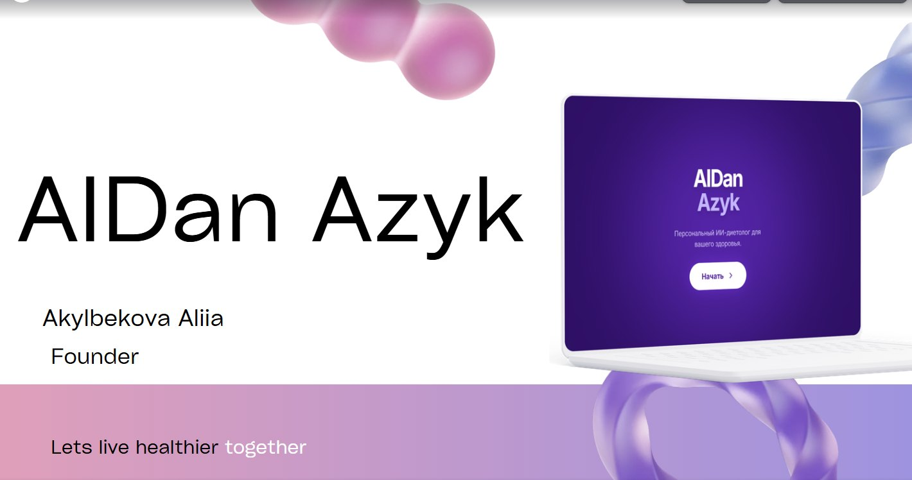

Pitch deck ↗
Planet A · AI Startup · Founder
AIDan Azyk
My own startup: a personal AI dietitian that builds a daily nutrition plan, tracks progress, chats like a coach and even creates recipes from what's already in your fridge — with products easy to find in Kyrgyzstan. Let's live healthier, together.
- Founderidea, product & pitch
- AIchat · tracker · diet plan
- 2026beta launch